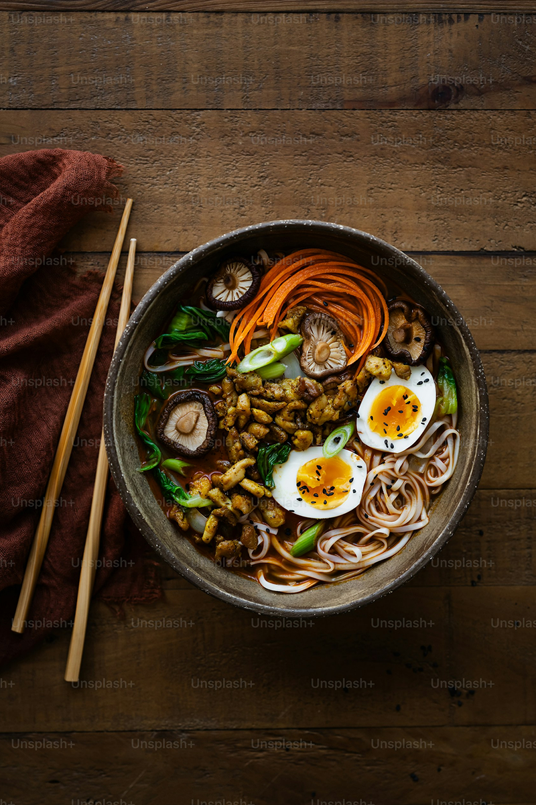
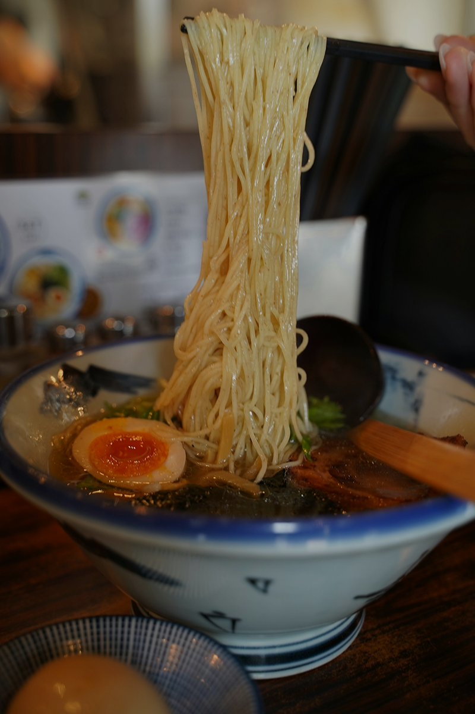
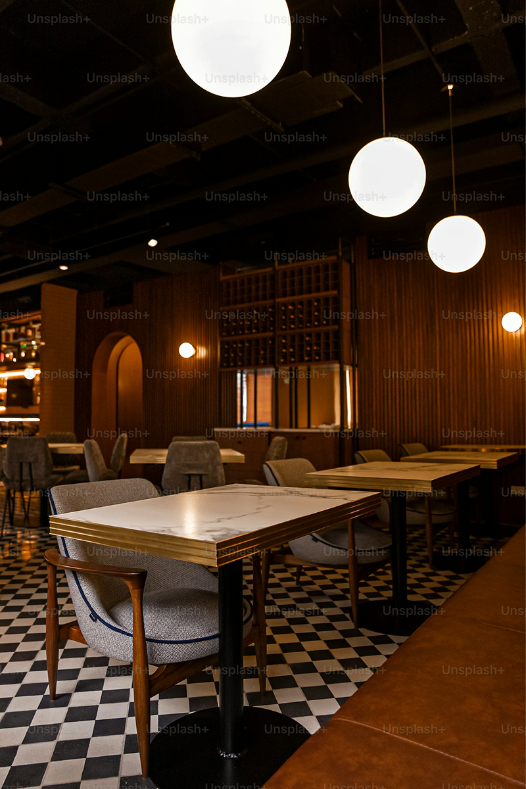

  <main>
    <div class="container">
      
      <article class="home">
        
        <section class="home__info">
    <div class="img-container">
      
    </div>
    <div>
      <h2 class="font-accent">Conoce nuestros platos</h2>
      <p> Descubre una cuidada selección de boles de ramen cocinados con alma. Desde nuestro cremoso e intenso Tonkotsu elaborado durante 16 horas, hasta opciones picantes y alternativas vegetarianas llenas de color y matices.</p>
  <button class="button-secondary">    <a href="">Ver carta</a></button>
    </div>
  </section>
<section class="home__info">
  <div>
    <h2 class="font-accent">Fideos hechos a mano</h2>
    <p> El secreto de un buen bol está en su textura. Elaboramos nuestros propios fideos frescos a diario utilizando harina de trigo seleccionada, siguiendo las técnicas artesanales de los maestros japoneses para conseguir el punto perfecto.</p>
<button class="button-secondary">    <a href="">Reserva ahora</a></button>

  </div>
  <div class="img-container">
    
  </div>
</section>
<section class="home__info">
  <div class="img-container">
    
  </div>
  <div>
    <h2 class="font-accent">Dejate sorprender</h2>
    <p> Cruza nuestra puerta y viaja directamente a una auténtica taberna escondida de Japón. Un espacio íntimo y acogedor diseñado para disfrutar del calor de un buen bol de ramen y una experiencia gastronómica inolvidable.</p>
<button class="button-secondary">    <a href="">El restaurante</a></button>
  </div>
</section>

</article>
</div>
  </main>

